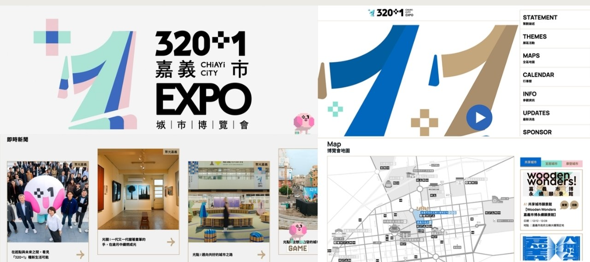
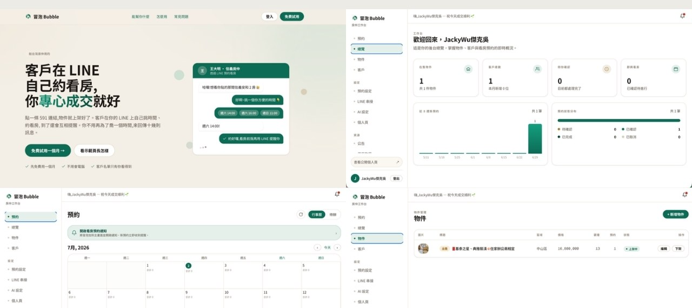
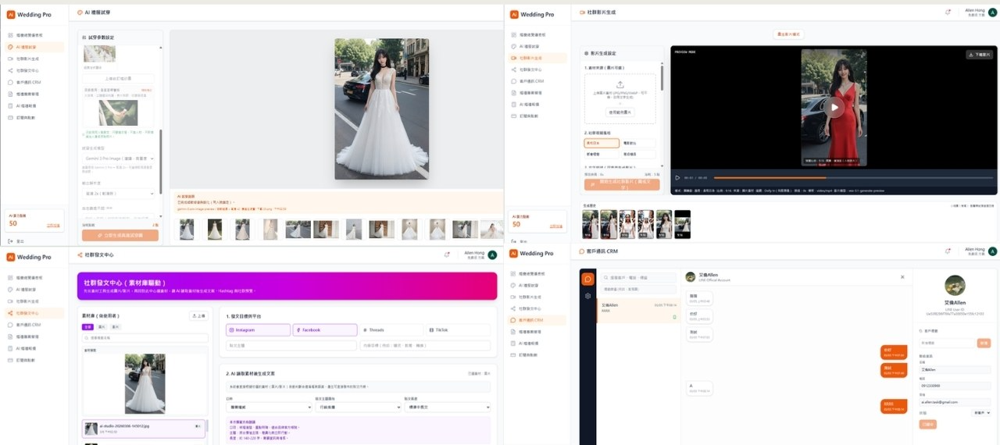

ENGINE · 引擎室
47 模組 AI 引擎 · Peak Ops
一套引擎,多個品牌。接客、CRM、創意生成、專案財務、數據——換臉不換心,越用越強。對外提供的通用版本就是 Peak Ops。
了解 Peak Ops →每個案例都從原本的工作方式開始,說明導入了哪些系統、AI 與人如何分工,以及最後改善了什麼。
六個房間、六門生意,樓下是同一顆 47 模組 AI 引擎。這些不是各做各的案子——它們共用一套引擎,一層一層長出來,每一層都是真的在營運的產品。
一套引擎,多個品牌。接客、CRM、創意生成、專案財務、數據——換臉不換心,越用越強。對外提供的通用版本就是 Peak Ops。
了解 Peak Ops →
主打 AI 客服做不到的事:把回憶做成影片。額度制包月、超量再加購,真實產業持續餵養資料飛輪。


{{ customNote }}
{{ customCred }}